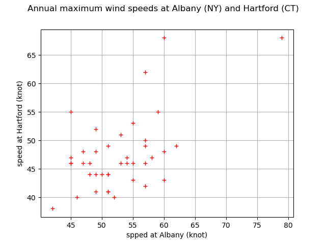
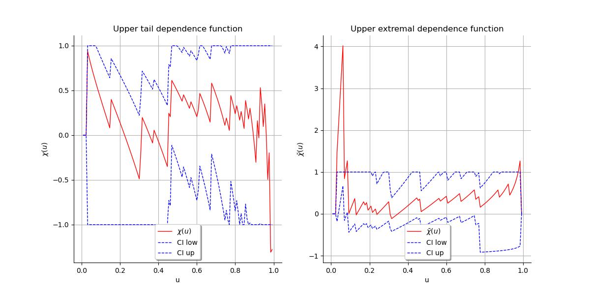

Note
Go to the end to download the full example code
Estimate tail dependence coefficients on the wind data¶
In this example we estimate the tail dependence coefficient of a bivariate sample applied to the corresponding annual maximum wind speeds over the period 1944-1983 at two locations in the United States: Albany, New-York and Hartford, Connecticut. Readers should refer to [coles2001] to get more details.
First, we load the wave_surge dataset. The speeds are expressed in knot : one knot is equalt to one nautical mile per hour, which means  .
.
import openturns as ot
import openturns.viewer as otv
from openturns.usecases import coles
data = coles.Coles().wind[:, 1:]
print(data[:5])
graph = ot.Graph(
"Annual maximum wind speeds at Albany (NY) and Hartford (CT)", "spped at Albany (knot)", "speed at Hartford (knot)", True, ""
)
cloud = ot.Cloud(data)
cloud.setColor("red")
graph.add(cloud)
view = otv.View(graph)

[ Hartford Albany ]
0 : [ 49 52 ]
1 : [ 54 46 ]
2 : [ 60 48 ]
3 : [ 49 44 ]
4 : [ 57 42 ]
We plot the graph of the function  and the graph of the function
and the graph of the function
 . We conclude that both variables are asymptotially dependent
as
. We conclude that both variables are asymptotially dependent
as  and that they are positively correlated as
and that they are positively correlated as  .
We cn visually deduce the upper tail dependence coefficient
.
We cn visually deduce the upper tail dependence coefficient  and
the upper extremal dependence coefficient
and
the upper extremal dependence coefficient  .
Note that the number of data points is so small that the curves seem chaotic. It is difficult, if not impossible, to deduce the value of
.
Note that the number of data points is so small that the curves seem chaotic. It is difficult, if not impossible, to deduce the value of  and
and  from the curves.
from the curves.
graph1 = ot.VisualTest.DrawUpperTailDependenceFunction(data)
graph2 = ot.VisualTest.DrawUpperExtremalDependenceFunction(data)
grid = ot.GridLayout(1, 2)
grid.setGraph(0, 0, graph1)
grid.setGraph(0, 1, graph2)
view = otv.View(grid)

otv.View.ShowAll()